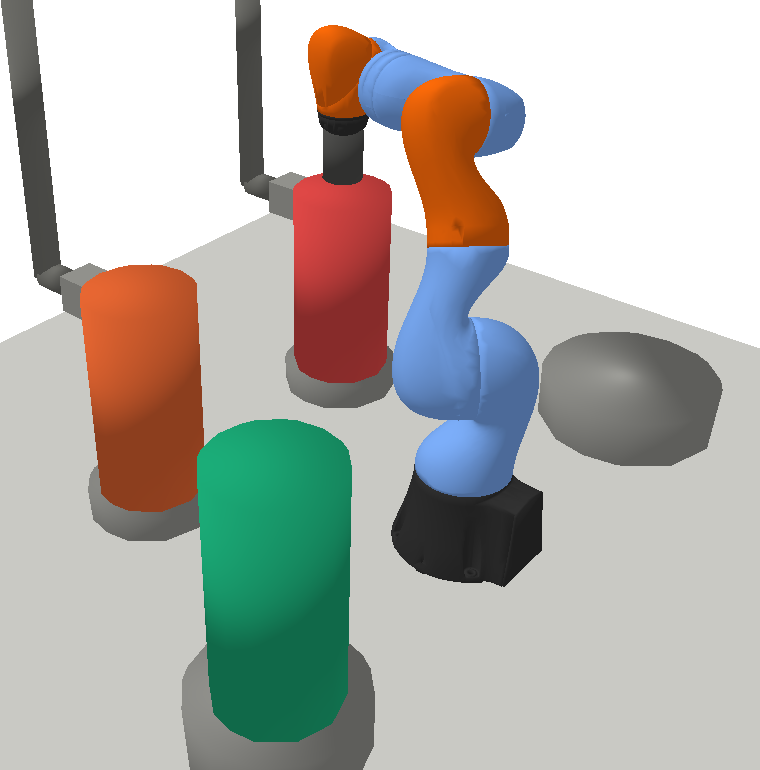
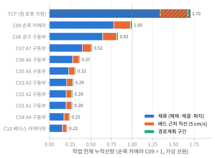
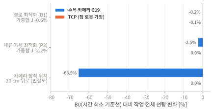
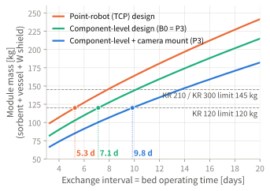

목적
- 오프가스 Xe 흡착베드를 교체하는 원격 매니퓰레이터의 피폭을 TCP 한 점이 아닌 부품 10개 단위로 평가 (관절 구동부 7, 공구 구동부, 손목 카메라, 베이스 커넥터)
- 경로, 작업 자세, 부품 배치 중 부품 선량을 실제로 줄이는 변수를 정량화
방법
- PyBullet 핫셀 시뮬레이션 (KUKA iiwa 14), 교체 작업 S1~S6 (접근 → 커플링 해제 → 반출 → 장착 → 체결 → 복귀)
- 부품 선량 Dk = Sk ∫ Ḋ(pk(q(t))) dt, 가중합 J = Σ Dk / TIDlim,k
- B0 RRT-Connect + TOPP-RA (시간 최소, 선박 경사 7조건 토크 제약)
- B1 TCP 선량 가중 3D A* (경로 최적화)
- P3 체류 자세 최적화: 공구 회전 × 영공간 후보 약 450개 중 J 최소 자세 선택

S2 커플링 해제 체류 자세 (P3). 빨강 Bed A(교체 대상), 주황 Bed B(교체 중 운전), 초록 신규 베드, 상단 회색 관은 오프가스 배관


